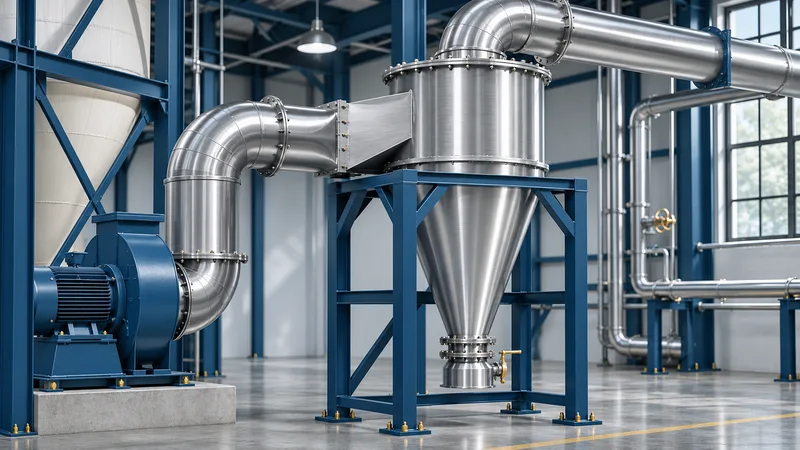

Enkelvoudige cyclonen
Efficiënte en robuuste scheiding van product uit een luchtstroom. Een beproefde oplossing voor diverse processen.
Bekijk oplossing: Enkelvoudige cyclonen


Betrouwbare scheiding van product uit een luchtstroom. Van enkelvoudige en multicyclonen tot maatwerk en afscheiders voor pneumatisch transport.
Hulp bij uw keuze
Efficiënte en robuuste scheiding van product uit een luchtstroom. Een beproefde oplossing voor diverse processen.
Bekijk oplossing: Enkelvoudige cyclonenMeerdere cyclonen in één uitvoering voor een compacte en doeltreffende scheiding, geschikt voor hogere capaciteiten.
Bekijk oplossing: Multicyclonen
Een cycloonoplossing die aansluit op uw proces, producteigenschappen en beschikbare ruimte.
Bekijk oplossing: Cyclonen op maat
Effectieve afscheiding van product uit transportlucht, voor een stabiel en continu proces.
Bekijk oplossing: Afscheiders voor pneumatisch transportDe juiste keuze hangt af van uw product, proces en installatie. Wij helpen u om de beste scheidingsoplossing te bepalen.
Advies op maatEen effectieve afscheiding vraagt om een oplossing die past bij uw product en proces. De cycloon scheidt productdeeltjes op basis van centrifugale kracht uit de luchtstroom, waardoor een betrouwbaar en robuust proces ontstaat.
Meer over het principe
[TBD]
[TBD]
[TBD]

Vertel ons over uw proces en uitdaging. We denken graag met u mee over de best passende oplossing.
We hebben uw bericht ontvangen en nemen contact met u op.